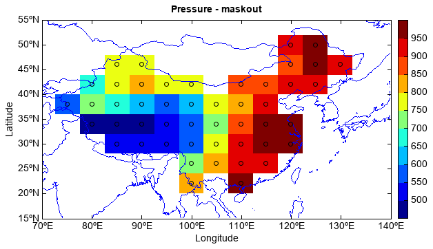

maskout¶
- mipylib.geolib.migeo.maskout(data, mask, x=None, y=None)¶
Maskout data by polygons - NaN values of elements outside polygons.
- Parameters
mask – (list) Polygon list as maskout borders.
data – (array_like) Array data for maskout.
x – (array_like) X coordinate array.
y – (array_like) Y coordinate array.
- Returns
(array_like) Maskouted data array.
Maskout with polygon shapes
fn = os.path.join(migl.get_sample_folder(), 'GrADS', 'model.ctl') f = addfile(fn) ps = f['PS'][0,'10:60','60:140'] lat = ps.dimvalue(0) lon = ps.dimvalue(1) #maskout m_china = shaperead('china') ps = geolib.maskout(ps, m_china.shapes, lon, lat) #plot test axesm() geoshow('country', edgecolor=(0,0,255)) layer = imshow(ps, 10) scatter(ps, facecolor=None) title('Pressure - maskout') ylabel('Latitude') xlabel('Longitude') colorbar(layer) xlim(70, 140) ylim(15, 55)
Maskout with patches
fn = os.path.join(migl.get_sample_folder(), 'GrADS', 'model.ctl') f = addfile(fn) ps = f['PS'][0,'10:60','60:140'] lat = ps.dimvalue(0) lon = ps.dimvalue(1) #maskout rect = Rectangle([71,21], 30, 20, facecolor=None, edgecolor='r') circle = Circle([120,30], 10, facecolor=None) ps = geolib.maskout(ps, [circle, rect], lon, lat) ps[ps==nan] = 0 #plot test ax = axesm() geoshow('country', edgecolor=(0,0,255)) layer = scatter(ps, cmap='WhBlGrYeRe', edgecolor='gray') ax.add_patch(circle) ax.add_patch(rect) title('Pressure') ylabel('Latitude') xlabel('Longitude') yticks([10,30,50]) colorbar(layer)